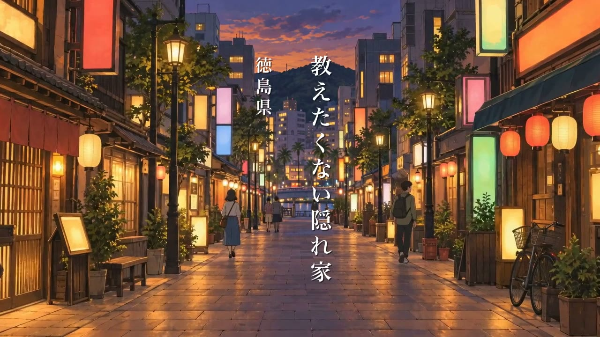
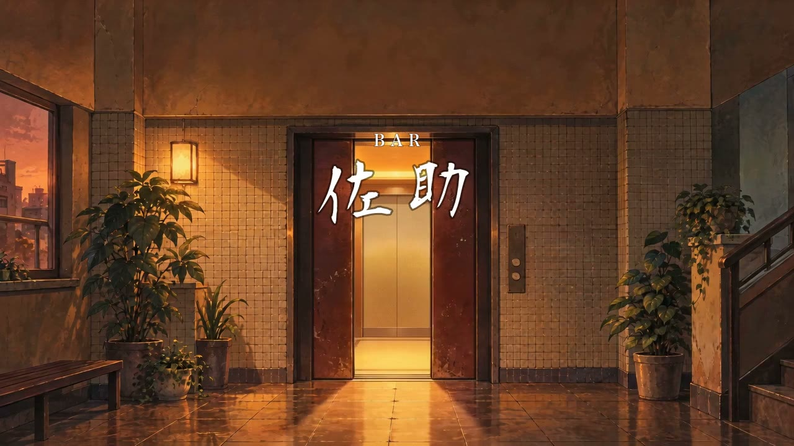
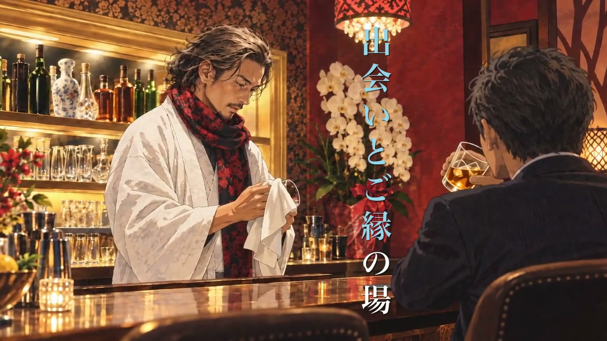
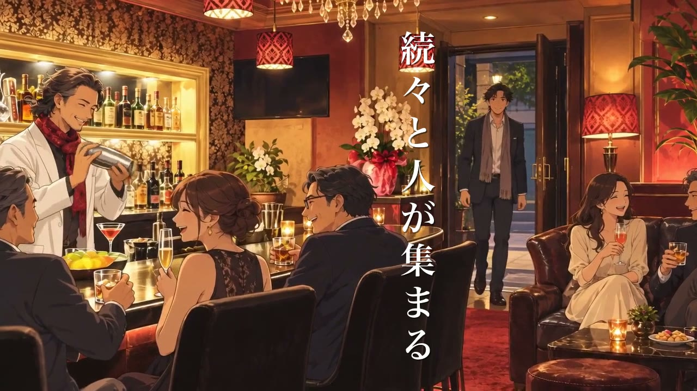
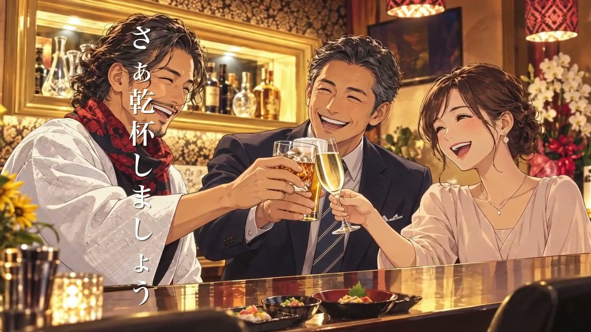
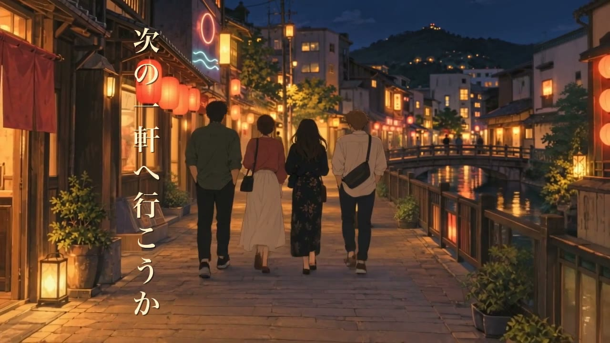
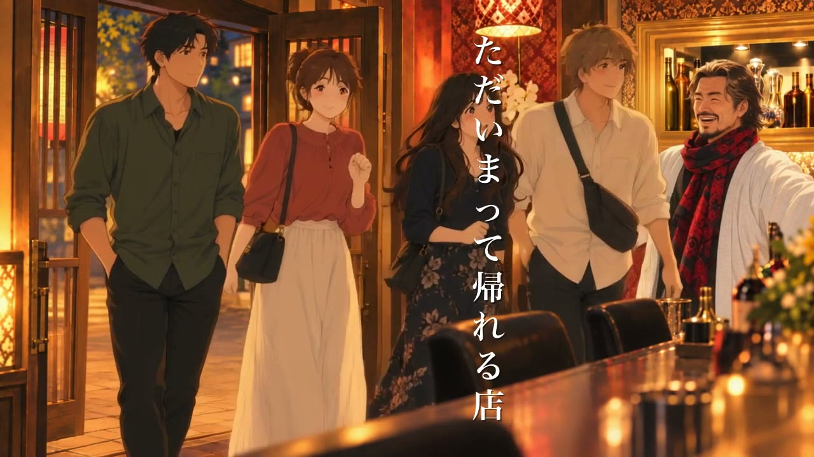
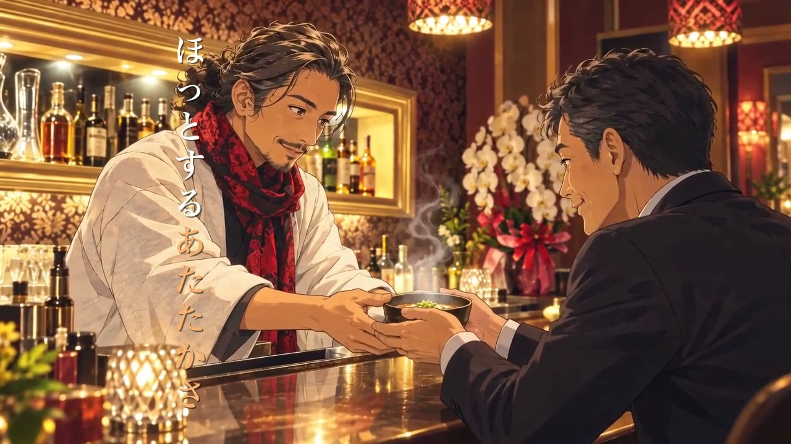
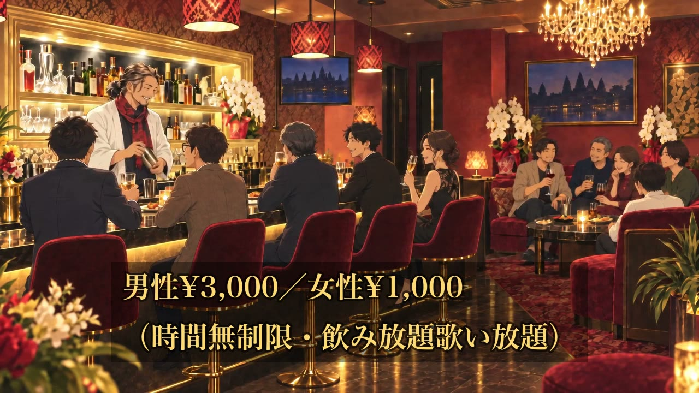
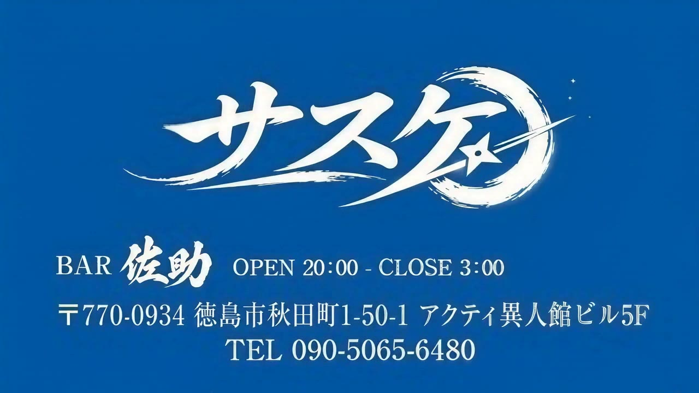

BAR佐助 ／ 完成版CM シーン一覧
修正のご依頼は、シーン番号（例：S03）を指定してお知らせいただくとスムーズです。
完成動画

画像をクリックするとYouTubeで再生されます。
修正依頼の書き方（例）
シーン番号だけでOKです。時間指定は不要です。
S03の店内の絵を直してほしいS06のテロップの文言を変えてほしいシーン番号だけでOKです。時間指定は不要です。
シーン一覧（全11シーン）

S010:00.0〜0:03.6
オープニング
徳島の夜の街並みを舞台に、キャッチコピーから始まる導入カットです。
テロップ 教えたくない隠れ家（徳島県）

S020:03.6〜0:07.7
エレベーターホール
ビル入口のエレベーターを抜け、BAR佐助のロゴが浮かび上がるカットです。
テロップ BAR 佐助

S030:07.7〜0:12.3
お出迎え
静かな店内で、佐助さんが一人のお客様とグラスを傾けるカット。コンセプトを最初にお伝えします。
テロップ 出会いとご縁の場

S040:12.3〜0:16.0
賑わい始め
扉が開くたびに新しいお客様が増えていく、賑わいが生まれていく様子のカットです。
テロップ 続々と人が集まる

S050:16.0〜0:19.6
乾杯
男性のお客様・女性のお客様・佐助さんが一緒に乾杯する、盛り上がりのカットです。
テロップ さぁ乾杯しましょう
S060:19.6〜0:23.4
引き合わせ
佐助さんが初対面同士のお客様を引き合わせ、意気投合する瞬間のカットです。
テロップ ここで出会いが生まれる

S070:23.4〜0:28.0
はしご酒へ
お客様たちが店を出て、夜の徳島の街をはしご酒へ向かって歩き出す後ろ姿のカットです。
テロップ 次の一軒へ行こうか

S080:28.0〜0:32.6
ただいま
はしご酒から戻ってきたお客様たちを、佐助さんが笑顔で迎え入れるカットです。
テロップ ただいまって帰れる店

S090:32.6〜0:36.3
〆の一杯
佐助さんが温かい〆のスープを差し出す、ホッとひと息つけるカットです。
テロップ ほっとするあたたかさ

S100:36.3〜0:40.8
料金のご案内
佐助さんと賑わうカウンターの引き画とともに、料金をご案内するカットです。
テロップ 男性¥3,000／女性¥1,000（時間無制限・飲み放題歌い放題）

S110:40.8〜0:45.9
エンドカード
屋号・住所・営業時間・電話番号をご案内して締めています。
（テロップなし・完成デザインのエンドカード）